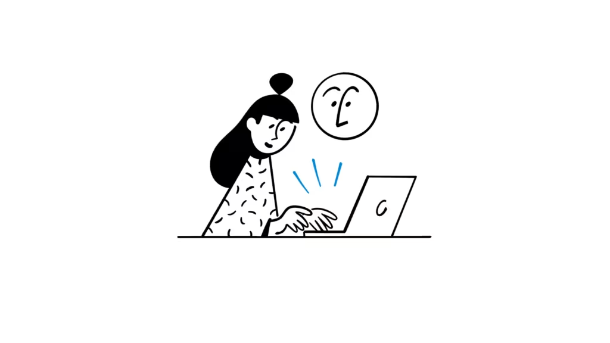

Lemonbase · AX Hackathon
2026.04.28 — 04.30
● AX 해커톤 · Day 3 발표
정보 수집부터 초안 작성까지
정보 수집부터 초안 작성까지
지식 파이프라인 구축
팀 · Gaby · Ellie · Hayley

Lemonbase Content
01 / 10
Before · 1단계
정보 수집 — 매체별 개별 탐색
1STAGE 1 — INGEST
정보 수집 — 매체별 개별 탐색
Slack #bot-hr-article · #knowledge
HR Dive · HBR 뉴스레터
McKinsey · Gallup · SHRM · HR Insight 직접 방문
Google 검색 · Google Alerts
Pain매체별로 일일이 진입, 주기 점검 놓치면 핵심 콘텐츠 누락


1 / 7뉴스레터 구독· 클릭하여 다음 화면
02 / 10
Before · 2~4단계
선별 · 축적 · 초안 작성
선별 → 축적 → 초안 작성, 담당자 개개인에 의존
그래서 KMS는 시도마다 무산
2콘텐츠 선별 — 머릿속 판단
현재수십 개 글 중 인용 가치 있는 것을 사람이 직접 비교 (신뢰도·신선도·차별점)
Pain주관적 판단, 기준 비일관, 기억 의존
3지식 축적 — 사람에 의존
현재담당자 1명에 모든 단계 집중. 다른 업무에 밀리면 발행 빈도 급락
Pain상시 운영 KMS 시도 여러 번, 모두 무산
4초안 작성 — 전 과정 수동
현재영문 자료 번역 → 통합·재구성 → AtoZ 표준 골격 → 표·체크리스트·인용 정리
Pain3,500~4,500자 + 자산 + 학술 인용까지 1인 작업
한 줄 요약
정보는 매일 쏟아지지만 — 지식으로 바뀌는 건 한 달에 두 편
03 / 10
Demo · 시연
리더십 진단 PoC
LIVE DEMO
시연
정보 수집 → 채점 → DB 적재 → 4점↑ 3건 누적 → 한국어 초안 자동 생성까지
한 사이클을 라이브로 시연합니다.
04 / 10
After · 1단계
정보 수집 자동화
1STAGE 1 — INGEST
정보 수집 — 자동 크롤링 파이프라인
Notion 마스터 토픽에서 주제를 받아 LLM이 키워드 추출 → RSS·Serper·섹션 시드를 모두 모아 seen_sources로 dedupe → 신규 URL만 본문 추출까지 자동 수행합니다.
소스 · 3-tier 수집
RSS 화이트리스트 + 검색 API + 섹션 시드
- RSS 6피드 · HBR · HR Dive · HR Executive · Josh Bersin · MIT Sloan · McKinsey
- Serper API · 키워드 EN×3페이지 + KO×3페이지
- 섹션 시드 · Fortune · SHRM · Gallup · Culture Amp · Lattice (상위 5)
- 본문 추출 · trafilatura → Playwright stealth → og:meta 3단 폴백
URL canonicalize
seen_sources dedupe
신규 0건이면 SKIP
트리거 · 3 ENTRY POINTS
CLI · 주간 일괄 · 대시보드
CLI · 주간 일괄 · 대시보드
모두 동일 파이프라인
CLI
uv run python run.py "주제"주간
weekly_run.py · ThreadPool 3 병렬대시보드FastAPI
POST /api/runs스케줄launchd 매주 월 09:00 자동 실행
시간
5h / 주
→
0분 (자동)
05 / 10
After · 2단계
콘텐츠 선별 자동화
2STAGE 2 — SCORE
콘텐츠 선별 — LLM 자동 채점 (5점 만점)
채점 프롬프트 v2가 5개 항목을 0/1로 판정. topic_fit 게이트 + db_context 동적 주입으로 DB 누적 콘텐츠 대비 차별점까지 자동 비교합니다. bifrost LLM 게이트웨이 + ThreadPool 8 병렬 호출.
5개 채점 항목 · BINARY 0/1
주관 판단 → 기준 일관 + 자동 분기
topic_fit· 5개 시드 주제 적합도 (게이트)authority_expertise· 권위 매체 화이트리스트 자동 1점 / 벤치마크 SaaS는 인용 풍부도(2건↑)recency_uniqueness· max(published, updated) 24개월 + DB 차별점demand· 검색·인용 수요practical_fit· HR 실무 적합성
자동 의사결정 · 3분기
exclude / db_load / synthesis_candidate
0~2점
exclude — DB 적재 X3점↑
db_load — Notion Source 누적4점↑
synthesis_candidate — 초안 후보 풀출력
matched_topic — 5 시드 풀에 자동 분류
기준
사람마다 다름
→
5×0/1 자동 판정
06 / 10
After · 3단계
지식 축적 자동화
3STAGE 3 — STORE
지식 축적 — Notion DB 상시 운영
결과 저장소는 Notion(외부) + 실행 메타는 sqlite(kms.db) 이중 구조. 주제 = 페이지 1개에 Source URL을 누적하고, topic_pages 카운터 3종으로 초안 트리거를 결정합니다.
Notion DB · 콘텐츠 결과 저장
주제 = 페이지 1개에 누적
주제(title) · 페이지 제목 = 파이프라인 topic키워드(multi_select) · en/ko union 누적Source(rich_text) · URL bullet 누적 (union)Status· Draft / In Review / Approved / Rejected페이지 본문· 초안 마크다운, 갱신 시 통째 교체
상시 KMS
Approved/Rejected는 weekly 비활성
sqlite kms.db · 실행 메타 + 게이트
topic_pages 카운터 3종이
topic_pages 카운터 3종이
초안 트리거를 결정
seen_sources(topic, url_canonical) PK · 모든 발견 URL 추적
topic_pages
source_count / draft_eligible_count / last_drafted_source_count임계값
config.json · source 3 / draft 4 / batch 3 (대시보드 편집)
구조
사람 의존 KMS
→
Notion + sqlite 자동
07 / 10
After · 4단계
초안 작성 자동화
4STAGE 4 — DRAFT
초안 작성 — 3건 누적 시 자동 트리거
게이트: delta = draft_eligible_count − last_drafted_source_count. 이 값이 draft_batch(3) 이상이 되면 초안 생성 프롬프트가 자동 호출되고 — 누적된 4점↑ 자료 전체를 통째로 합성합니다.
필수 스키마 · 5개 레퍼런스 패턴
레몬베이스 AtoZ 표준 골격을 코드화
probation-review·year-end-checklist(Lemonbase AtoZ)how-to-create-rating-guide(유사 가이드)- Personio HR Lexicon · Lattice calibration (SERP 상위)
- 골격: 정의·목적 → 설계 시 고려 → 운영 시 유의 → CTA → 같이 읽으면 좋을 콘텐츠 → 참고 자료
SEO 옵션 7
E-E-A-T
GEO·FAQ
자연스러운 브랜드 임베딩
출력 · OUTPUT
한국어 마크다운 초안
한국어 마크다운 초안
Notion 페이지 본문 통째 교체
트리거delta ≥ 3 (마지막 합성 후 새로 누적된 4점↑ 수)
입력누적된 4점↑ 자료 전체 재추출 후 합성 (신규+과거)
저장기존 블록 archive → 새 블록 append (Notion 자체 버전 히스토리)
발행Status=Approved 이후 사람이 수동 발행 (Ghost 연동은 향후)
시간
8~16h / 편
→
검수·다듬기 1~2h
08 / 10
Impact · 기대 임팩트
6STAGE 6 — 기대 임팩트
01
시간을 사람의 의지가 아닌
시스템이 보장
강제성
정보 수집 · 콘텐츠 선별에 들어가는시간을 사람의 의지가 아닌
시스템이 보장
02
초안 검토 · 발행 2일 → 반나절
경제성
정보 수집 · 선별 5시간 → 10분초안 검토 · 발행 2일 → 반나절
03
확장성
나만의 지식 DB 생성 가능09 / 10
Use Case · 확장성
+확장성 예시
Ellie · AI 트렌드 큐레이션
매일 쏟아지는 AI 소식을
주제별로 자동 선별·요약
주제별로 자동 선별·요약
긱뉴스 · 레딧 · X · 링크드인 · 요즘IT · AI Sparkup
- → 노이즈 많고 따라가기 벅찬 AI 소식들
- → 보고 싶은 주제만 등록하면 자동 수집·요약
- → 원하는 포맷으로 나만의 AI 트렌드 DB
Hayley · PRS팀 분석 확장성
리더십 진단 · 조직심리
연구 문헌을 쌓는다
연구 문헌을 쌓는다
학술 논문 · 리더십 진단 문헌
- → 주제 등록 → 자동 수집 → Notion DB 누적
- → 분야별 지식 축적으로 PRS팀 분석 scalability 기여
- → 1인 수작업 리서치 → 팀 공유 지식 인프라
10 / 10